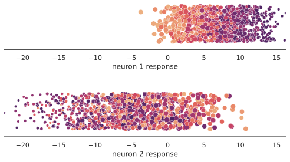
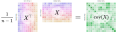
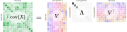

Install all required dependencies
# TODO uncomment before final packaging
# %pip install git+https://github.com/BonnerLab/ccn-tutorial.gitHere’s a link to this notebook on Google Colab.
Let’s perform an imaginary neuroscience experiment! We’ll record voltages from P = 2 neurons in visual cortex while the participant passively views N = 1000 dots of different colors and sizes.
# TODO uncomment before final packaging
# %pip install git+https://github.com/BonnerLab/ccn-tutorial.gitfrom collections.abc import Sequence, Callable
import warnings
from typing import NamedTuple
import numpy as np
import pandas as pd
import xarray as xr
import seaborn as sns
from matplotlib import pyplot as plt
from matplotlib.figure import Figure
import matplotlib.ticker as ticker
from matplotlib.animation import FuncAnimation
from matplotlib_inline.backend_inline import set_matplotlib_formats
import ipywidgets as widgets
from IPython.display import display, HTMLfrom utilities.toy_example import (
create_stimuli,
Neuron,
simulate_neuron_responses,
simulate_multiple_neuron_responses,
view_individual_scatter,
)%matplotlib inline
sns.set_theme(
context="notebook",
style="white",
palette="deep",
rc={"legend.edgecolor": "None"},
)
set_matplotlib_formats("svg")
pd.set_option("display.max_rows", 5)
pd.set_option("display.max_columns", 10)
pd.set_option("display.precision", 3)
pd.set_option("display.show_dimensions", False)
xr.set_options(display_max_rows=3, display_expand_data=False)
warnings.filterwarnings("ignore")random_state = 0
rng = np.random.default_rng(seed=random_state)Let’s create N = 1000 dots of different colors and sizes. From the scatterplot, we can see that the two latent variables are uncorrelated.
def create_stimuli(
n: int,
*,
rng: np.random.Generator,
) -> pd.DataFrame:
return pd.DataFrame(
{
"color": rng.random(size=(n,)),
"size": rng.random(size=(n,)),
}
).set_index(1 + np.arange(n))def view_stimuli(data: pd.DataFrame) -> Figure:
fig, ax = plt.subplots()
sns.scatterplot(
ax=ax,
data=data,
x="color",
y="size",
hue="color",
size="size",
palette="flare",
legend=False,
)
sns.despine(ax=ax, trim=True)
fig.tight_layout()
plt.close(fig)
return fig
stimuli = create_stimuli(n=1_000, rng=rng)
view_stimuli(stimuli)
Now, let’s simulate some neural data. We need to decide how the P = 2 neurons might respond to these N = 1000 stimulus dots. Each neuron could respond to either one or both of the latent features that define these stimuli – \text{color} and \text{size}. The neuron’s responses could also be subject to noise.
Here, we model each neuron’s response r_\text{neuron} as a simple linear combination of the two latent features with stimulus-independent Gaussian noise \epsilon:
r_{\text{neuron}} \sim \beta_{\text{color}} \left( \text{color} \right) + \beta_{\text{size}} \left( \text{size} \right) + \epsilon, where \epsilon \sim \mathcal{N}(\mu_{\text{neuron}}, \sigma_{\text{neuron}}^2)
Neuron = NamedTuple(
"Neuron",
beta_color=float,
beta_size=float,
mean=float,
std=float,
)As we can see, each neuron’s response is completely defined by exactly four parameters:
def simulate_neuron_responses(
stimuli: pd.DataFrame,
neuron: Neuron,
*,
rng: np.random.Generator,
) -> np.ndarray:
def z_score(x: np.ndarray) -> np.ndarray:
return (x - x.mean()) / x.std()
return (
neuron.beta_color * z_score(stimuli["color"])
+ neuron.beta_size * z_score(stimuli["size"])
+ neuron.std * rng.standard_normal(size=(len(stimuli),))
+ neuron.mean
)def simulate_multiple_neuron_responses(
*,
stimuli: pd.DataFrame,
neurons: Sequence[Neuron],
rng: np.random.Generator,
) -> xr.DataArray:
data = []
for i_neuron, neuron in enumerate(neurons):
data.append(
xr.DataArray(
data=simulate_neuron_responses(
stimuli=stimuli,
neuron=neuron,
rng=rng,
),
dims=("stimulus",),
coords={
column: ("stimulus", values)
for column, values in stimuli.reset_index(names="stimulus").items()
},
)
.expand_dims({"neuron": [i_neuron + 1]})
.assign_coords(
{
field: ("neuron", [float(value)])
for field, value in neuron._asdict().items()
}
)
)
return (
xr.concat(data, dim="neuron")
.rename("neuron responses")
.transpose("stimulus", "neuron")
)This procedure produces a data matrix X \in \mathbb{R}^{N \times P} containing the P = 2 neurons’ responses to the N = 1000 stimuli.
neurons = (
Neuron(beta_color=3, beta_size=-2, std=1, mean=7),
Neuron(beta_color=-2, beta_size=5, std=3, mean=-6),
)
data = simulate_multiple_neuron_responses(
stimuli=stimuli,
neurons=neurons,
rng=rng,
)
display(data)<xarray.DataArray 'neuron responses' (stimulus: 1000, neuron: 2)>
12.97 -15.39 1.005 3.224 1.226 2.431 ... 6.028 -6.32 5.488 -16.32 6.215 -9.989
Coordinates: (3/8)
* neuron (neuron) int64 1 2
* stimulus (stimulus) int64 1 2 3 4 5 6 7 ... 994 995 996 997 998 999 1000
... ...
std (neuron) float64 1.0 3.0How is this information encoded in the population activity? Is there a neuron that is sensitive to color and another that is sensitive to size?
One way to understand this is by studying the neurons directly. Let’s start by visualizing the response of each neuron to our stimuli. Note that the below plots are 1-dimensional scatterplots; the spread along the vertical axis is just for visualization purposes.
def view_individual_scatter(
data: xr.DataArray,
*,
coord: str,
dim: str,
template_func: Callable[[int], str],
) -> Figure:
rng = np.random.default_rng()
data_ = data.assign_coords(
{"arbitrary": ("stimulus", rng.random(data.sizes["stimulus"]))}
)
min_, max_ = data_.min(), data_.max()
n_features = data.sizes[dim]
fig, axes = plt.subplots(nrows=n_features, figsize=(7, 2 * n_features))
for index, ax in zip(data[coord].values, axes.flat):
label = template_func(index)
sns.scatterplot(
ax=ax,
data=(
data_.isel({dim: data[coord].values == index})
.rename(label)
.to_dataframe()
),
x=label,
y="arbitrary",
hue="color",
size="size",
palette="flare",
legend=False,
)
sns.despine(ax=ax, left=True, offset=10)
ax.set_xlim([min_, max_])
ax.get_yaxis().set_visible(False)
fig.tight_layout(h_pad=3)
plt.close(fig)
return figview_individual_scatter(
data,
coord="neuron",
dim="neuron",
template_func=lambda x: f"neuron {x} response",
)
By visualizing the responses, we can see that each neuron is tuned to both color and size.
We can also use methods such as Representational Similarity Analysis (RSA)(Kriegeskorte 2008) to study the information content of the two neurons. In RSA, the dissimilarity between the response of a system to each pair of stimuli is obtained and represented in a matrix of dissimilarities (a representational dissimilarity matrix, or RDM). Therefore, an RDM indicates the degree to which each pair of stimuli is distinguished by a system.

What if we want to study the underlying structure of this code? Is there another view of the population code that might be more informative?
Instead of directly studying the neurons, we can focus on the underlying factors that capture the structure and variance in the data.
Since we only have P = 2 neurons, we can visualize these data as a scatterplot, which makes their covariance apparent.
def view_joint_scatter(
data: xr.DataArray,
*,
coord: str,
dim: str,
template_func: Callable[[int], str],
draw_axes: bool = False,
) -> Figure:
fig, ax = plt.subplots()
data_ = pd.DataFrame(
{coord_: data[coord_].values for coord_ in ("color", "size")}
| {
template_func(index): data.isel({dim: index - 1}).to_dataframe()[coord]
for index in (1, 2)
}
)
sns.scatterplot(
ax=ax,
data=data_,
x=template_func(1),
y=template_func(2),
hue="color",
size="size",
legend=False,
palette="flare",
)
if draw_axes:
ax.axhline(0, c="gray", ls="--")
ax.axvline(0, c="gray", ls="--")
ax.set_aspect("equal", "box")
sns.despine(ax=ax, offset=20)
plt.close(fig)
return fig
view_joint_scatter(
data,
coord="neuron responses",
dim="neuron",
template_func=lambda x: f"neuron {x} response",
)
We can use the covariance to change the way we view the data. Run the animation below for demonstration.
def animate_pca_transformation(
data: xr.DataArray,
*,
durations: dict[str, int] = {
"center": 1_000,
"rotate": 1_000,
"pause": 500,
},
interval: int = 50,
) -> str:
def _compute_2d_rotation_matrix(theta: float) -> np.ndarray:
return np.array(
[
[np.cos(theta), -np.sin(theta)],
[np.sin(theta), np.cos(theta)],
]
)
fig = view_joint_scatter(
data,
coord="neuron responses",
dim="neuron",
template_func=lambda x: f"neuron {x} response",
draw_axes=True,
)
ax = fig.get_axes()[0]
scatter = ax.get_children()[0]
title = fig.suptitle("neuron responses")
n_frames = {key: value // interval + 1 for key, value in durations.items()}
x_mean, y_mean = data.mean("stimulus").values
delta = np.array([x_mean, y_mean]) / n_frames["center"]
_, _, v_h = np.linalg.svd(data - data.mean("stimulus"))
v = v_h.transpose()
theta = np.arccos(v[0, 0])
rotation = _compute_2d_rotation_matrix(-theta / n_frames["rotate"])
transformed = (data - data.mean("stimulus")).values @ v
radius = max(np.linalg.norm(transformed, axis=-1))
limit = max(np.abs(data).max(), np.abs(transformed).max(), radius)
ax.set_xlim([-limit, limit])
ax.set_ylim([-limit, limit])
fig.tight_layout()
frame_to_retitle_center = 2 * n_frames["pause"]
frame_to_start_centering = frame_to_retitle_center + n_frames["pause"]
frame_to_stop_centering = frame_to_start_centering + n_frames["center"]
frame_to_retitle_rotate = frame_to_stop_centering + n_frames["pause"]
frame_to_start_rotating = frame_to_retitle_rotate + n_frames["pause"]
frame_to_stop_rotating = frame_to_start_rotating + n_frames["rotate"]
frame_to_retitle_transformed = frame_to_stop_rotating + n_frames["pause"]
frame_to_end = frame_to_retitle_transformed + 2 * n_frames["pause"]
def _update(frame: int) -> None:
if frame < frame_to_retitle_center:
return
elif frame == frame_to_retitle_center:
title.set_text("step 1 of 2: center the data")
ax.set_xlabel("")
ax.set_ylabel("")
elif frame < frame_to_start_centering:
return
elif frame <= frame_to_stop_centering:
scatter.set_offsets(scatter.get_offsets() - delta)
elif frame == frame_to_retitle_rotate:
title.set_text("step 2 of 2: rotate the data")
elif frame < frame_to_start_rotating:
return
elif frame <= frame_to_stop_rotating:
scatter.set_offsets(scatter.get_offsets().data @ rotation)
elif frame < frame_to_retitle_transformed:
return
elif frame == frame_to_retitle_transformed:
title.set_text("principal components")
ax.set_xlabel("principal component 1")
ax.set_ylabel("principal component 2")
elif frame <= frame_to_end:
return
animation = FuncAnimation(
fig=fig,
func=_update,
frames=frame_to_end,
interval=interval,
repeat=False,
)
plt.close(fig)
return animation.to_html5_video()
# display(HTML(animate_pca_transformation(data)))Click on the animation above to visualize the PCA transformation!
As seen in the animation, we can transform our data to view the directions of maximum variance. These directions are the principal components of our data.
Given a data matrix X \in \mathbb{R}^{N \times P}, we need to compute the eigendecomposition1 of its covariance2:
\begin{align*} \text{cov}(X) &= \left(\dfrac{1}{n - 1}\right) (X - \overline{X})^\top (X - \overline{X})\\ &= V \Lambda V^\top \end{align*}
To do this, we start by computing the covariance of our data matrix, where X is centered (i.e. X - \overline{X})

Next , we compute the the eigendecomposition of the covariance (though the computational steps we take to get there are slightly different, as shown later)

The columns of V are eigenvectors that specify the directions of variance while the corresponding diagonal elements of \Lambda are eigenvalues that specify the amount of variance along the eigenvector3.
Finally, the original data matrix can be transformed by projecting it onto the eigenvectors: \widetilde{X} = \left(X - \overline{X}\right) V.

PCA can be used to project data into a lower-dimensional space (i.e. p \le f) in a way that best preserves the geometry of the data. Specifically, computing a PCA decomposition of X yields a matrix V \in \mathbb{R}^{f \times p} such that V = \argmin_{V \in \mathbb{U_{f \times p}}} \sum_{i=1}^n \left|| x_i - VV^\top x_i \right||_2, where ||\cdot||_2 denotes the L_2-norm and \mathbb{U_{f \times p}} denotes the set of orthonormal matrices with shape f \times p.
class PCA:
def __init__(self) -> None:
self.mean: np.ndarray
self.eigenvectors: np.ndarray
self.eigenvalues: np.ndarray
def fit(self, /, data: np.ndarray) -> None:
self.mean = data.mean(axis=-2)
data_centered = data - self.mean
_, s, v_t = np.linalg.svd(data_centered)
n_stimuli = data.shape[-2]
self.eigenvectors = np.swapaxes(v_t, -1, -2)
self.eigenvalues = s**2 / (n_stimuli - 1)
def transform(self, /, data: np.ndarray) -> np.ndarray:
return (data - self.mean) @ self.eigenvectorsTo apply PCA to a data matrix, we might be tempted to use the definition and naively compute its covariance followed by an eigendecomposition. However, when the number of neurons P is large, this approach is memory-intensive and prone to numerical errors.
Instead, we can use the singular value decomposition (SVD) of X to efficiently compute its PCA transformation. Specifically, X = U \Sigma V^\top is a singular value decomposition, where U and V are orthonormal and \Sigma is diagonal.
The covariance matrix reduces to X^\top X / (n - 1) = V \left(\frac{\Sigma^2}{n - 1} \right) V^\top, which is exactly the eigendecomposition required.
Specifically, the eigenvalues \lambda_i of the covariance matrix are related to the singular values \sigma_i of the data matrix as \lambda_i = \sigma_i^2 / (N - 1), while the eigenvectors of the auto-covariance matrix are exactly the right singular vectors V of the data matrix X.
Check out truncated SVD!
Let’s now project our data into its principal components and analyse it in this space.
def compute_pca(data: xr.DataArray) -> xr.Dataset:
pca = PCA()
pca.fit(data.values)
data_transformed = pca.transform(data.values)
return xr.Dataset(
data_vars={
"score": xr.DataArray(
data=data_transformed,
dims=("stimulus", "component"),
),
"eigenvector": xr.DataArray(
data=pca.eigenvectors,
dims=("component", "neuron"),
),
},
coords={
"rank": ("component", 1 + np.arange(data_transformed.shape[-1])),
"eigenvalue": ("component", pca.eigenvalues),
}
| {coord: (data[coord].dims[0], data[coord].values) for coord in data.coords},
)
pca = compute_pca(data)
display(pca["score"])<xarray.DataArray 'score' (stimulus: 1000, component: 2)>
11.19 1.269 -10.77 -1.394 -9.962 -1.541 ... -1.028 8.777 -5.869 3.39 -2.457
Coordinates: (3/5)
* stimulus (stimulus) int64 1 2 3 4 5 6 7 ... 994 995 996 997 998 999 1000
rank (component) int64 1 2
... ...
size (stimulus) float64 0.01301 0.8278 0.4962 ... 0.08158 0.3216
Dimensions without coordinates: componentThe eigenvectors represent the directions of maximum variance in our data.
with xr.set_options(display_expand_data=True):
display(pca["eigenvector"])<xarray.DataArray 'eigenvector' (component: 2, neuron: 2)>
array([[ 0.43538525, 0.90024423],
[-0.90024423, 0.43538525]])
Coordinates: (3/7)
* neuron (neuron) int64 1 2
rank (component) int64 1 2
... ...
std (neuron) float64 1.0 3.0
Dimensions without coordinates: componentWe can view the data projected onto each of the principal components.
view_individual_scatter(
pca["score"],
coord="rank",
dim="component",
template_func=lambda x: f"principal component {x}",
)
We observe that:
Note that these components do not directly correspond to either of the latent variables. Rather, each is a mixture of stimulus-dependent signal and noise.
The eigenvalues show the variance along each eigenvector. The sum of the eigenvalues is therefore equal to the total variance.
eigenvalues = pca["eigenvalue"].round(3)
for i_neuron in range(eigenvalues.sizes["component"]):
print(
f"variance along eigenvector {i_neuron + 1} (eigenvalue {i_neuron + 1}):"
f" {eigenvalues[i_neuron].values}"
)
print(f"total variance: {eigenvalues.sum().values}")variance along eigenvector 1 (eigenvalue 1): 46.296
variance along eigenvector 2 (eigenvalue 2): 6.148
total variance: 52.444We can also see that this is equal to the total variance in the original data.
variances = data.var(dim="stimulus", ddof=1).round(3).rename("neuron variances")
for i_neuron in range(variances.sizes["neuron"]):
print(f"variance of neuron {i_neuron + 1} responses: {variances[i_neuron].values}")
print(f"total variance: {variances.sum().values}")variance of neuron 1 responses: 13.758
variance of neuron 2 responses: 38.685
total variance: 52.443We can plot the eigenvalues as a function of their rank to visualize the eigensceptrum. As we will see shortly, the eigenspectrum provides valuable insights about the laten dimensionality of the data.
def view_eigenspectrum(pca: xr.DataArray) -> Figure:
fig, ax = plt.subplots(figsize=(pca.sizes["component"], 5))
sns.lineplot(
ax=ax,
data=pca["component"].to_dataframe(),
x="rank",
y="eigenvalue",
marker="s",
)
ax.set_xticks(pca["rank"].values)
ax.set_ylim(bottom=0)
sns.despine(ax=ax, offset=20)
plt.close(fig)
return fig
view_eigenspectrum(pca)
In these data, the dimensionality is clear: there are two latent variables and both are evident in the principal components. However, in real data, we typically record from more than P = 2 neurons, therefore judging the dimensionality becomes tricky. To simulate such a scenario, let’s record from more neurons (say P = 10).
def _simulate_random_neuron(rng: np.random.Generator) -> Neuron:
return Neuron(
beta_color=rng.integers(-10, 11),
beta_size=rng.integers(-10, 11),
std=rng.integers(-10, 11),
mean=rng.integers(-10, 11),
)
neurons = tuple([_simulate_random_neuron(rng) for _ in range(10)])
big_data = simulate_multiple_neuron_responses(
stimuli=stimuli,
neurons=neurons,
rng=rng,
)
display(big_data)<xarray.DataArray 'neuron responses' (stimulus: 1000, neuron: 10)>
-1.747 -8.53 -7.006 4.696 8.766 28.16 ... 8.782 0.7017 -2.132 -1.981 -1.87
Coordinates: (3/8)
* neuron (neuron) int64 1 2 3 4 5 6 7 8 9 10
* stimulus (stimulus) int64 1 2 3 4 5 6 7 ... 994 995 996 997 998 999 1000
... ...
std (neuron) float64 -5.0 2.0 -3.0 5.0 -10.0 ... -2.0 -4.0 -2.0 -8.0As before, we can visualize each the principal component and plot the eigenspectrum:
big_pca = compute_pca(big_data)
view_individual_scatter(
big_pca["score"],
coord="rank",
dim="component",
template_func=lambda x: f"principal component {x}",
)
view_eigenspectrum(big_pca)
We know by design that this data was generated from 2 latent variables – color and size. However, in real datasets with naturalistic stimuli, we often don’t know what the latent variables are! It’s common to use the eigenspectrum to estimate the latent dimensionality of the data. For instance, inspecting the eigenspectrum of our toy example tells us that the first two dimensions have much higher variance than the rest. We refer to these as the effective dimensions.
In general, there are several approaches for estimating dimensionality based on the eigenspectrum:
The rank of the covariance matrix – equal to the number of nonzero eigenvalues – would be the latent dimensionality in the ideal setting where the data has zero noise. In real data, the rank is typically equal to the ambient dimensionality (which here is the number of neurons we record from), since there is typically some variance along every dimension.
print(f"rank = {(big_pca.eigenvalue > 0).sum().values}")
def view_thresholded_eigenspectrum(pca: PCA, *, threshold: int | float) -> Figure:
fig = view_eigenspectrum(pca)
ax = fig.get_axes()[0]
ax.axhline(threshold, ls="--", c="gray")
xlim = ax.get_xlim()
ylim = ax.get_ylim()
ax.fill_between(x=xlim, y1=ylim[-1], y2=threshold, color="green", alpha=0.1)
ax.fill_between(x=xlim, y1=ylim[0], y2=threshold, color="red", alpha=0.1)
return fig
view_thresholded_eigenspectrum(big_pca, threshold=0)rank = 10
Though not typically used today, another approach is to set an arbitrary threshold on the variance (historically recommended as 1 for normalized data); only dimensions with variance above that threshold are considered useful.
view_thresholded_eigenspectrum(big_pca, threshold=150)
A very commonly used method is to set a threshold based on the cumulative variance of the data: the number of dimensions required to exceed, say 80\% of the variance, is taken as the latent dimensionality.
def view_cumulative_eigenspectrum(
pca: xr.DataArray, *, threshold: float = 0.8
) -> Figure:
fig, ax = plt.subplots(figsize=(pca.sizes["component"], 5))
data = pca["eigenvalue"].copy()
data["eigenvalue"] = data.cumsum()
data = data.rename({"eigenvalue": "cumulative variance"})
data["cumulative proportion of variance"] = (
data["cumulative variance"] / pca["eigenvalue"].sum()
)
sns.lineplot(
ax=ax,
data=data.to_dataframe(),
x="rank",
y="cumulative variance",
marker="s",
)
ax.set_xticks(pca["rank"].values)
ax_twin = ax.twinx()
ax_twin.set_ylabel("cumulative proportion of variance")
ax_twin.axhline(threshold, ls="--", c="gray")
xlim = ax_twin.get_xlim()
ylim = ax_twin.get_ylim()
ax_twin.fill_between(x=xlim, y1=ylim[-1], y2=threshold, color="red", alpha=0.1)
ax_twin.fill_between(x=xlim, y1=ylim[0], y2=threshold, color="green", alpha=0.1)
sns.despine(ax=ax, offset=20)
sns.despine(ax=ax_twin, offset=20, left=True, bottom=True, right=False, top=True)
ax_twin.yaxis.set_major_formatter(ticker.PercentFormatter(1))
fig.tight_layout()
plt.close(fig)
return fig
view_cumulative_eigenspectrum(big_pca)When the number of latent dimensions is low, eigenspectra often have a sharp discontinuity (the “knee”), where a small number of dimensions have high-variance and the remainder have much have lower variance. The latent dimensionality is then taken to be the number of dimensions above this threshold determined by eye.
def view_eigenspectrum_knee(pca: PCA, *, knee: int) -> Figure:
fig = view_eigenspectrum(pca)
ax = fig.get_axes()[0]
ax.plot(
knee,
big_pca["eigenvalue"].isel({"component": big_pca["rank"] == knee}).values,
"o",
ms=30,
mec="r",
mfc="none",
mew=3,
)
ax.axvline(knee, ls="--", c="gray")
xlim = ax.get_xlim()
ylim = ax.get_ylim()
ax.fill_betweenx(y=ylim, x1=xlim[-1], x2=knee, color="red", alpha=0.1)
ax.fill_betweenx(y=ylim, x1=xlim[0], x2=knee, color="green", alpha=0.1)
return fig
view_eigenspectrum_knee(big_pca, knee=3)
So far, all of the techniques discussed depend on a paramter that needs to be decided by the researcher. For instance, a cumulative threshold of 80% is an arbitrary choice, and if we decided to choose 90% instead, we would get a different number of dimensions. This is why sometimes a parameter-free estimate is preferred.
A metric such as effective dimensionality summarizes the spectrum using an entropy-like measure, taking into account variances along all the dimensions:
d_\text{eff}(\lambda_1, \dots \lambda_n) = \dfrac{\left( \sum_{i=1}^n \lambda_i \right)^2}{\sum_{i=1}^n \lambda_i^2}
def compute_effective_dimensionality(eigenspectrum: np.ndarray) -> float:
return (np.sum(eigenspectrum) ** 2) / (eigenspectrum**2).sum()
def view_effective_dimensionality_examples(pca: PCA) -> Figure:
n_components = pca.sizes["component"]
spectrum_1 = [float(pca["eigenvalue"].mean().values)] * n_components
weights = 1 / (1 + np.arange(n_components, dtype=np.float32))
weights /= weights.sum()
spectrum_2 = list(weights * pca["eigenvalue"].sum().values)
spectrum_3 = [float(pca["eigenvalue"].sum().values)] + [0] * (n_components - 1)
data = pd.DataFrame(
{
"eigenvalue": spectrum_1 + spectrum_2 + spectrum_3,
"rank": list(np.tile(pca["rank"].values, 3)),
"example": [0] * n_components + [1] * n_components + [2] * n_components,
}
)
# return data
g = sns.relplot(
kind="line",
data=data,
col="example",
x="rank",
y="eigenvalue",
marker="o",
height=3,
aspect=1,
facet_kws={
"sharey": False,
},
)
for i_spectrum, ax in enumerate(g.axes.flat):
d = compute_effective_dimensionality(
data.loc[data["example"] == i_spectrum, "eigenvalue"]
)
ax.set_title("$d_{eff}$" + f" = {d.round(2)}")
ax.set_xticks([1, 10])
sns.despine(g.figure, offset=10)
g.figure.tight_layout(w_pad=2)
plt.close(g.figure)
return g.figure
print(
"effective dimensionality ="
f" {compute_effective_dimensionality(big_pca['eigenvalue']).values.round(2)}"
)
view_effective_dimensionality_examples(big_pca)effective dimensionality = 2.55
Before PCA, it’s often recommended to preprocess the data by Z-scoring each of the input features X – ensuring that they have zero mean and unit variance:
Z = \dfrac{X - \mu}{\sigma}
Often, PCA is applied to data where the features are fundamentally different from each other. For example, we might have a dataset where the features of interest are the prices of cars (in dollars) and their masses (in kilograms). Since these two features have different units, the variances of the features are not directly comparable – there’s no obvious way to numerically compare a variance of ($20,000)2 in price and a variance of (1,000 kg)2 in mass. Even if the features being compared are all the same, if they are in different units – say euros, dollars, and cents – the raw variances of the data matrix are meaningless.
Since PCA implicitly assumes that the variances along each dimension are comparable, we can Z-score each of the features before applying PCA to ensure that they are on a common scale.
Note, however, that this transformation reduces the information in the system – it is possible that the variances of the features are informative.